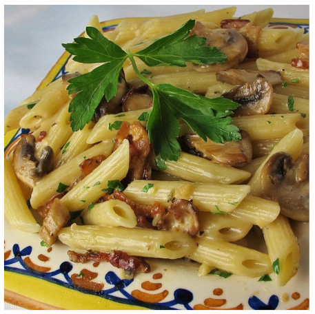

Ingredientes
- 1 pacote (340g) de macarrão penne
- 1 pacote (85g) de pancetta (bacon italiano), em cubos
- 2 colheres de sopa de manteiga sem sal
- 1 pacote (283g) de cogumelos fatiados
- 1 colher de sopa de alho picado
- ½ xícara de creme de leite fresco (nata)
- ¼ colher de chá de tempero italiano (mistura de ervas)
- ¼ xícara de queijo parmesão ralado, ou a gosto
Passos
- Encha uma panela grande com água levemente salgada e leve ao fogo alto até ferver. Adicione o penne e deixe ferver novamente. Cozinhe o penne descoberto, mexendo ocasionalmente, até que fique macio mas firme à mordida (al dente), de 8 a 10 minutos. Escorra e reserve.
- Enquanto isso, cozinhe a pancetta em uma frigideira grande em fogo médio até dourar, mas sem ficar crocante, cerca de 5 minutos. Escorra em um prato forrado com papel-toalha e reserve. Descarte a gordura da pancetta.
- Derreta a manteiga na mesma frigideira em fogo médio-alto; adicione os cogumelos. Cozinhe e mexa até que os cogumelos amoleçam e soltem seus líquidos. Adicione o alho; cozinhe por 2 minutos. Reduza o fogo para médio-baixo; adicione o creme de leite e o tempero italiano. Deixe ferver suavemente até que o molho engrosse levemente.
- Fora do fogo, adicione o penne ao molho; misture bem para envolver. Polvilhe com queijo parmesão e sirva.